Abonos de Origen Animal
Estiércol Fresco

Aporta nutrientes rápidamente y mejora la estructura del suelo.
Estiércol Compostado
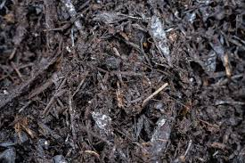
Versión estable y segura del estiércol, libre de patógenos.
Guano
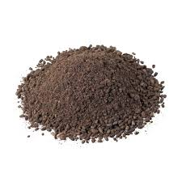
Excrementos de aves o murciélagos, muy ricos en N y P.
Harina de Huesos

Fuente de fósforo y calcio para enraizamiento y floración.
Harina de Sangre
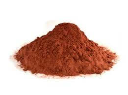
Potente fertilizante de acción rápida, muy rico en nitrógeno.
Bioles
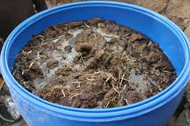
Fertilizantes líquidos fermentados, con hormonas y microorganismos.
Abonos de Origen Vegetal
Compost
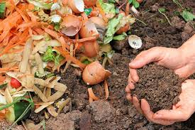
Mejora la estructura y la retención de agua de todo tipo de suelos.
Humus de Lombriz
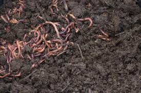
El mejorador de suelos por excelencia, rico en ácidos húmicos.
Abono Verde
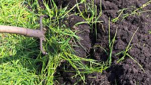
Cultivos que se incorporan al suelo para mejorar su fertilidad.
Ceniza Vegetal
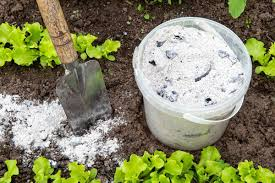
Aporta potasio y calcio, ideal para corregir la acidez del suelo.
Extractos Vegetales
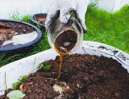
Concentrados líquidos que estimulan el crecimiento y defensas.
Mixtos y Especiales
Bokashi
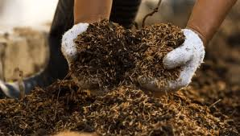
Técnica de fermentación japonesa que crea un abono rápido y potente.
Biofertilizantes Microbianos
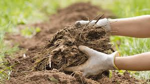
Inóculos de microorganismos que mejoran la absorción de nutrientes.
Té de Compost
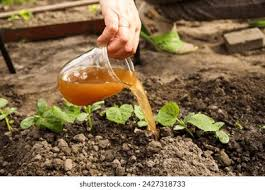
Extracto líquido de compost para fertilización y protección foliar.
Fermentos Lácticos
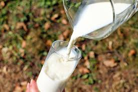
Mejoran la microbiota del suelo con bacterias benéficas.
""La salud de nuestro planeta comienza en la tierra que nutrimos."